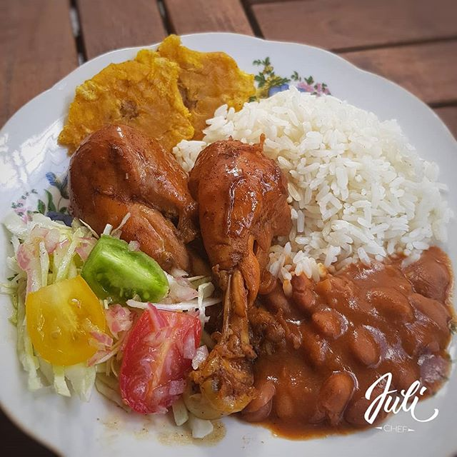

La bandera Dominicana
La bandera Dominicana es un plato delicioso. Lo escogi por que es un plato nacional de la republica dominicana

Igrendientes
- 1 pollo entero dividido en piezas.
- 2 cebollas rojas.
- 3 dientes de ajo.
- sal al gusto.
- 2 limones agrios exprimidos.
- 1 cucharada de sazón completo.
- Verduras, un manojo.
- Cilantro, un ramito.
- 2 chadas. orégano entero.
- 1 charadita de salsa inglesa.
- 2 cucharadas de salsa de tomate.
- ½ taza de vino de cocinar.
- 1 cucharada de aceite de maíz.
Pasos
- Comenzamos lavando el pollo con limón.
- Pone a sazonar por lo menos una hora antes de cocinar.
con los siguientes ingredientes.
- Cebolla, ajo majado con sal, verduras,cilantro, orégano y la salsa inglesa.
- Luego ponemos a a calentar la olla en el aceite.
- Le echa un poco de azúcar y se ponen a dorar las piezas.
- Después que estén con color se le ponen los demás ingredientes dejándolo reposar por lo menos 15 minutos.
- Le pone aproximadamente 1 taza de agua.
- luego que este a mitad de cocinar se le ponen los demás ingredientes y se espera a que espese.